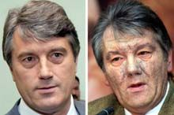

Viktor YushchenkoViktor Yushchenko was an accountant and economist appointed head of Ukraine’s national bank in 1993, shortly after the country gained independence from the former Soviet Union. From 1999 -2001, Yushchenko became Prime Minister of the Ukraine. In 2004, he ran for the office of President.
On September 5, 2004, Viktor Yushchenko had dinner at the home of the head of Ukraine’s Security Service. The next day, he experienced severe abdominal pains and vomiting. After several days of no improvement and barely able to walk, Yushchenko was rushed to a medical clinic in Austria where doctors discovered that his liver, pancreas, and intestines were swollen and damaged. After several days in hospital in Austria, Yushchenko returned to the Ukraine to continue campaigning in the presidential election. During this campaign, Yushchenko used painkillers heavily to help him deal with his discomfort.
In November 2004, his opponent, Yanukovych, won the election, but when the election appeared to be fraudulent, a re-vote was conducted in December 2004. The pro-Western Yushchenko won this second election by a narrow margin of roughly 52% to Yanukovych’s 44%. When Yanukovych contested the results, the Ukraine’s Supreme Court ruled that the results of the second vote would stand. Viktor Yushchenko was inaugurated as President of the Ukraine on January 23, 2005.
Forensic toxicologists confirmed that dioxin was the poison that caused Viktor Yushchenko’s ailment. He had 1000 times the normal concentration of dioxin in his blood. His initial severe abdominal pains suggested that the poison had been placed in his food.
Dioxins are highly toxic chemical compounds produced in small concentrations when organic substances are burned in the presence of chlorine. Dioxins are by-products of factories that use chlorine in the cleaning and manufacturing of paper, textiles, pesticides, and plastics. Major sources of dioxins are coal-fired utilities, metal smelters, diesel trucks, and the burning of wood treated with preservatives. Dioxins are also in cigarette smoke from cigarettes that contain chlorine-based pesticides or chlorine-bleached paper. Because dioxins are found in a wide range of common substances (such as food packaging, tampons, etc.), all people receive small doses of dioxins. However, relatively small doses do not seem to pose health hazards.
One of the most obvious symptoms of dioxin poisoning is chloracne, a condition of painful blisters that cause the face to be swollen and greyish colour. Chloracne is not harmful to a person’s overall health, but it does make the victim appear much older. Other immediate symptoms of dioxin poisoning include nausea, vomiting, and abdominal pain.
The long-term effects of dioxin poisoning include cancer, liver damage, reproductive organ damage, diabetes, and heart disease. Doctors predict Yushchenko’s damaged liver will return to normal functioning, but because dioxins remain in the body for long periods, some of the long-term effects of dioxin poisoning could appear later in his life.
Viktor Yushchenko’s supporters accused his political opponent, Viktor Yanukovych, of the poisoning, claiming that the Russian government was responsible for supplying the dioxin. Yanukovych and his supporters have denied any involvement. After Yushchenko was elected, he announced he would provide proof that his political opponent had tried to assassinate him. To date, this proof had not been revealed by Yushchenko or his supporters.
An investigation by the Ukrainian Security Service and the Ukrainian Prosecutor-General’s Office has not identified the culprit(s) responsible for the poisoning of Viktor Yushchenko.
Russian authorities have been criticized for using toxic gases such as those containing sleep-inducing agents. During a 2002 hostage crisis in which Chechen rebels held more that 600 Russian theatregoers, the majority of the deaths from the crisis were due to a toxic gas released by Russian authorities into the theatre.